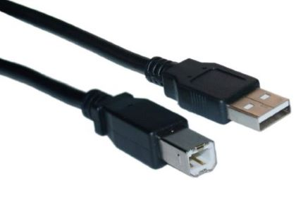

Conosciuto anche come USB standard-A, la USB tipo A è il progetto originale per lo standard USB con una forma piatta e rettangolare. In un tipico cavo USB, il connettore Tipo A, alias il connettore A-maschio, è l’estremità che va in un host, ad esempio un computer. E su un host, la porta USB (o presa) dove va inserito il tipo A-maschio, è la porta A-femmina (valido per tutti i tipi di USB).
Le USB di tipo A è caratterizzata da diverse versioni tra cui USB 1.1, USB 2.0, USB 3.0. Un connettore è sempre compatibile con le diverse versioni ad esempio, un disco rigido esterno USB 3.0 funziona anche con una porta USB 2.0, e viceversa.
Dal momento che i dispositivi periferici variano molto per forma e dimensione, il connettore di tipo B e la sua porta hanno molti disegni differenti. Fino ad ora ci sono cinque disegni per spine e connettori USB di tipo B.
Lo standard originale (Standard-B): è stato realizzato per USB 1.1 e viene utilizzato anche per USB 2.0. Soprattutto per il collegamento di grandi dispositivi periferici, come stampanti o scanner ad un computer.
Mini-USB: significativamente più piccolo, le porte mini-USB di tipo B si trovano in dispositivi portatili più vecchi, come fotocamere digitali, smartphone e anziani unità portatili. Questo design sta diventando obsoleto.
Micro-USB: Leggermente più piccolo del mini-USB, la porta Micro-USB tipo B è attualmente il design USB più importante per smartphone e tablet .
Micro-USB 3.0: questo è il disegno più utilizzato per le USB 3.0 che si trovano sui dispositivi portatili. La maggior parte delle volte, il tipo A ha un’estremità del cavo è blu.
Standard-B USB 3.0: Questo design è molto simile allo standard-B, tuttavia, è progettato per gestire la velocità delle USB 3.0. La maggior parte delle volte, entrambe le estremità del cavo sono blu.
USB 1.1:ha una velocita massima di 12Mbps con una potenza massima di 2.5V, 500mA è una inversione di energia Host di periferiche con configurazione del cavo Tipo-A e tipo B
USB 2.0:ha una velocita massima di 480Mbps con una potenza massima di 2.5V, 1.8A è una inversione di energia Host di periferiche con configurazione del cavo Tipo-A e tipo B
USB 3.0:ha una velocita massima di 5Gbps con una potenza massima di 5V, 1.8A è una inversione di energia Host di periferiche con configurazione del cavo Tipo-A e tipo B
USB 3.1:ha una velocita massima 10Gbps con una potenza massima di 20V, 5A è una inversione di energia Bidirezionale con configurazione del cavo Type-C entrambe le estremità, spina reversibili